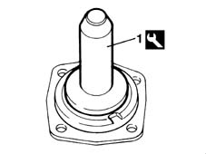

2110D60 single oil seal on differential - replace
- Path
- Procedures > 21 GEARBOX > 2110 MANUAL GEARBOX AND DIFFERENTIAL > 2110D manual gearbox differential > 2110D60 single oil seal on differential - replace
- Kind
- repair procedure (removal / refitting; the operation number is the code)
- Applies to
- engines: 1.9 JTD 8V; all production periods
- Interactive page
- https://sloeber94.github.io/elrnDB-fMltpl/en/#/2891544
Applies to: engines: 1.9 JTD 8V; all production periods
 Removing
Removing
 Refitting
Refitting2110D50 single flange on differential - r + r with drive shaft removed
Remove the oil seal from the flange.
Applies to: engines: 1.9 JTD 8V; all production periods
Refitting
Removing1. Using the tool, fit the new oil seal in its seating on the flange.
 | Name | Country |
|---|---|---|
1 | Fitting tool | 1.875.016.000 |

Applies to: engines: 1.9 JTD 8V; all production periods
2110D50 single flange on differential - r + r with drive shaft removed